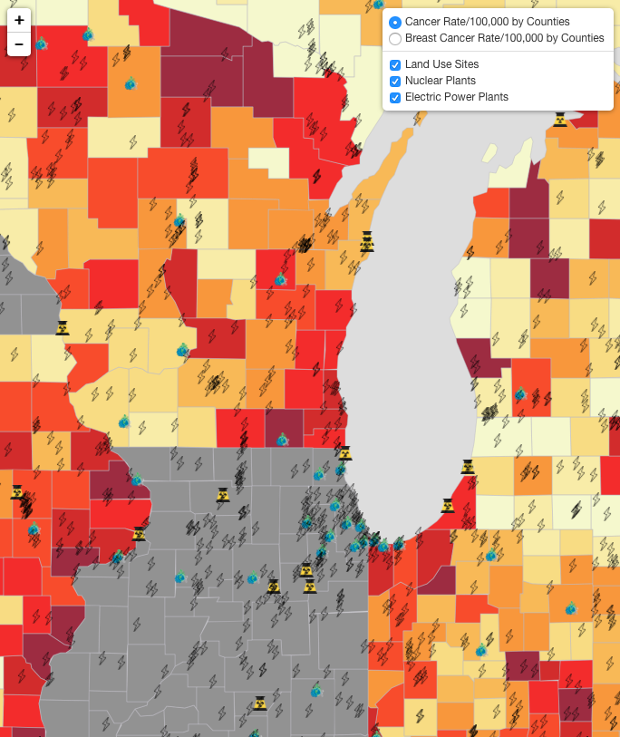

|

US County Cancer Poll Map
|
Vis tool: R(leaflet)
Description:
This visualization is a map of two types of cancer on US county level. Furthermore, this map also shows locations of land use sites, nuclear plants, and electric power plants, which may be potential causes of cancer.
|
Code and Data